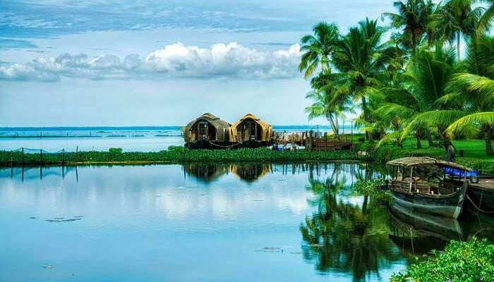
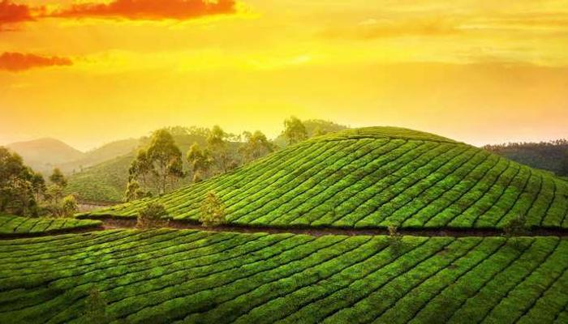

SAILING COLLECTIVE
Kerala
God’s Own Country, Kerala has some extremely beautiful tourist destinations to hold the attention of global tourists. There are hill-stations, backwaters, commercial cities, hamlets, and much more to explore. Rich culture and heritage coupled with some of the best places to visit in Kerala attract crowds from all over the world.Once you set foot in the beautiful paradise, all other things seem inconsequential.Some of the must visit places are listed below!
Alleppey – The Backwater Hot Spot

Alleppey tops this list of best places to visit in Kerala with pictures. Its backwater trips, houseboat stays, and serene beauty attract a fair number of people to its territory. In fact, it is the most popular place to experience some offbeat Kerala backwaters. Lord Curzon’s depiction of Alleppey as the Venice of the East is not hyperbole. Alleppey houseboat vacation is what people look for on their visit to Alleppey. There are expanses of paddy fields, quaint chapels, interesting fishing villages, and lakes filled with water lilies which make Alleppey one of the best tourist places in Kerala for 3 days trip itinerary.The fascination of Keralites with coconut and banana leaves in their food will prove to be a good experiment for you if you have never had it before. The cobbled pathways and cleaner roads comparatively will take you on an old-world tour.
Munnar

A very popular one among hill stations in Kerala, Munnar is one of the best tourist places in Kerala for 2 days trip itinerary. Once the summer capital for the British, Munnar sightseeing attracts tourists from all across the world. With about 80,000 miles of tea plantation, an equal measure of aromatic vegetation, misty valleys, and low-flying clouds, Munnar is a hill station that has become one of the best tourist places in Kerala for a honeymoon.Cute bungalows, cozy homestays and lavish hotels and resorts in Munnar, make it the most romantic destination even among the top places to visit in Kerala. The old world colonial feel has its own charms and it certainly makes for a good selfie drive. Revel in the extraordinary blend of luxury and beauty, at the most amazing honeymoon resorts in Munnar.
Wayanad

Wayanad means the land of paddy fields in Malayalam. Wayanad is one of the greenest tourist places in Kerala. Enriched with godly beauty, serene atmosphere and rich culture, Wayanad tourism is a perfect mix of nature and man-made heritage. After all, the place is famous for its richness in cultures, traditions, and tribal heritage. Small, unnamed waterfalls, that line the city haphazardly, add to the place’s charm. Being home to some of the most lush green vegetation, Wayanad is one of the most refreshing forest places to visit in Kerala.
Click here and navigate to Home!